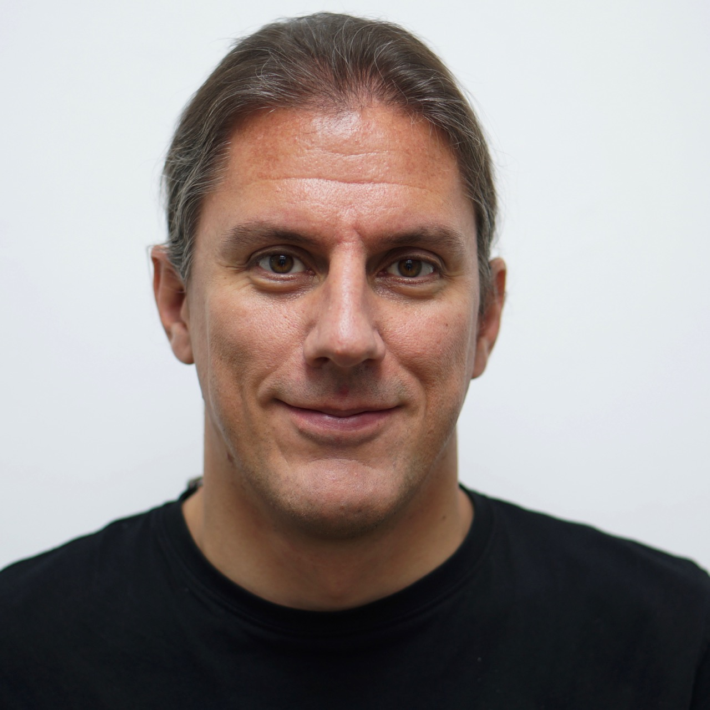

Software
Architecture
We do.
Wie werde ich ein erfolgreicher Software-Architekt?
Sprecher: Eberhard Wolff, Fellow bei INNOQ
Software-Architektur ist ganz einfach: Eigentlich muss man nur ein System aufteilen und moderne Ansätze wie DDD oder Microservices nutzen. Diese Präsentation zeigt völlig andere Voraussetzungen, die ein guter Software-Architekt mitbringen muss. Im Mittelpunkt stehen die technischen Entscheidungen, die ein Architekt treffen muss, wie man am besten mit solchen Entscheidungen umgeht und wie man herausfindet, auf welcher Basis man die Entscheidungen treffen kann. Und weil Software-Projekte immer im Team stattfinden, geht es natürlich auch um Soft Skills und den Umgang mit den Teams.
 Eberhard Wolff ist Fellow bei INNOQ und arbeitet seit mehr als fünfzehn Jahren als Architekt und Berater, oft an der Schnittstelle zwischen Business und Technologie. Er ist Autor zahlreicher Artikel und Bücher, u.a. zu Continuous Delivery und Microservices und trägt regelmäßig als Sprecher auf internationalen Konferenz vor. Sein technologischer Schwerpunkt sind moderne Architektur- und Entwicklungsansätze wie Cloud, Continuous Delivery, DevOps und Microservices.
Wir werden uns am 17. Juni 2019 um 18:30 Uhr
in den Räumen von TNG Technology Consulting GmbH in der Arabellastraße
treffen:
Arabellastraße 4a
81925 München
Für Getränke und Essen ist gesorgt.
Hello, World!
Das Ziel der Software Architektur München Gruppe ist es, Menschen, die sich mit Software Architektur auseinandersetzen wollen, in und um München regelmäßig zusammenzubringen, und einen persönlichen Erfahrungsaustausch zu etablieren. Dazu dienen neben den Xing-Gruppen-Möglichkeiten insbesondere der persönliche Erfahrungsaustausch, organisiert in informellen Treffen, Diskussion von Erfahrungsberichten und Case Studies bis hin zu Vorträge und Workshops. Diese werden auch über Twitter @swamuc und Meetup bekannt gegeben. Detaillierte Information über vergangene Veranstaltungen findet ihr in unserem Wiki.
Die Software Architektur München Gruppe wird organisiert von